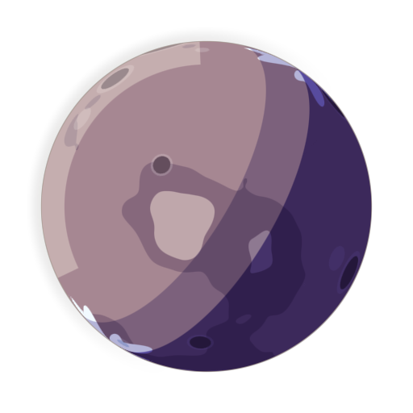

Atmospheric escape
How planets lose their air to space, and why small, warm worlds lose it fastest.

Planets slowly leak air into space. At the very top of an atmosphere, fast-moving molecules can reach escape velocity and leave for good.
Air is lost faster when:
- Gravity is weak. This is why the Moon and Mercury have almost no air.
- The upper atmosphere is hot. Warm gas moves faster.
- The gas is light. Hydrogen and helium go first, while heavy gases like carbon dioxide stay.
Cold can make up for weak gravity. Saturn's moon Titan is small but has a thick atmosphere because it is so cold.
A star can also strip air with its wind and flares, which is where a magnetic field helps, and why red dwarfs are hard on their planets. Ultraviolet light can split water vapor, and the hydrogen escapes, which may be how Venus lost its oceans.
Most of this takes millions to billions of years.
In Space Time, the clock runs fast enough that a world losing its air over a few hundred thousand years can be watched in Cryosleep.